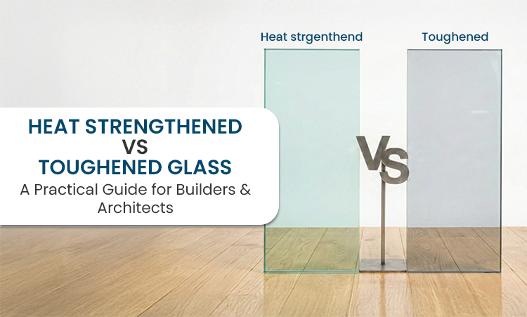

Heat Strengthened vs Toughened Glass. What Actually Matters on Site
Most problems with glass do not start after installation. They start at the specification stage. Someone writes "toughened glass" because it sounds safer. Someone else says "heat strengthened is enough". And the decision gets locked without thinking too much about where the glass will actually be used.
On drawings, both look the same. On-site, they behave very differently. If you are a builder or an architect, this difference matters more than most people realise. Let's keep this simple.
Heat-strengthened glass first
Heat-strengthened glass is regular float glass that is processed to make it stronger. Not extremely strong. Just stronger than normal glass. It can handle more heat and stress than annealed glass, but it is not meant for impact zones.
When heat-strengthened glass breaks, it cracks into large pieces. It does not explode. The glass usually stays partly in place, especially when laminated. This behaviour is useful in façade systems.
- Curtain walls
- Spandrel glazing
- Large fixed panels where you do not want a sudden open gap if something goes wrong
Heat strengthened glass is often used as part of laminated glass because it gives better control after breakage.
Now toughened glass
Toughened glass is processed much more aggressively. It is heated and cooled fast. That creates internal stress, which makes the glass much stronger. Toughened glass can take impact. It can take higher temperature differences. And when it breaks, it breaks fully.
Instead of large shards, it turns into many small, blunt pieces. This is why it is used where people can touch the glass.
- Doors
- Partitions
- Railings
- Shower enclosures
- Public areas
Once toughened glass fails, the opening is completely clear. That is not a defect. That is the safety feature.
Strength alone should not decide
Many people choose toughened glass everywhere because it is stronger. That is not always the right decision. Strength matters, but behaviour after breakage matters just as much.
Heat strengthened glass is weaker than toughened glass, yes. But it behaves more predictably in certain applications. If the glass is part of a façade system, controlled cracking can be better than full collapse. If the glass is in a door or a railing, full breakage into safe fragments is better.
Context decides. Not strength alone.
Safety and code reality
This is where things get practical. Toughened glass is accepted as safety glass. Most codes demand it in areas where people can fall, lean, or collide with glass.
Heat strengthened glass by itself is not safety glass. But when it is laminated, it can meet safety requirements and still give better post-breakage performance than monolithic toughened glass. That is why you often see laminated heat-strengthened glass in high-rise buildings.
Heat and sunlight exposure
Both types handle heat better than normal glass. Toughened glass handles higher temperature differences. It is safer where thermal shock is a concern. Heat-strengthened glass handles moderate temperature changes and performs well in laminated assemblies.
If the glass is exposed to uneven sunlight, shading, or reflective heat, toughened glass gives more margin.
Visual quality is often ignored
This matters more than people admit. Toughened glass can show slight distortion.
- Roller marks
- Waves in reflection
Heat-strengthened glass usually looks cleaner because the internal stress is lower. For large façades and premium buildings, this difference shows up once the glass is installed.
Fabrication realities
Once glass is toughened, nothing can be changed.
- No cutting
- No drilling
- No resizing
If something is wrong, the glass has to be remade. Heat-strengthened glass also needs processing before strengthening, but it works well in laminated and structural systems. This affects timelines and replacement risk.
Cost is not just the material price
Yes, heat-strengthened glass is usually cheaper than toughened glass. But that is not the full picture. Think about replacement cost.
- Downtime
- Compliance issues
- Safety concerns
- Visual acceptance
A cheaper glass that fails the requirement ends up being expensive.
So what should you use
Heat-strengthened glass makes sense when:
- It is laminated
- Optical quality matters
- Controlled breakage is preferred
- The glass is part of a façade system
Toughened glass makes sense when:
- People can touch the glass
- Safety glass is mandatory
- Impact is possible
- Doors, partitions, and railings are involved
There is no universal answer. Industry references, show that tempered glass is classified as safety glass because of how it breaks, while heat-strengthened glass is chosen for controlled post-breakage behaviour in façade systems.
Where TUFFTRON fits in
At TUFFTRON, glass is not treated as a standard product. The team works closely with builders and architects to understand where the glass is being used, how it will be loaded, and what the safety expectation is.
TUFFTRON, manufactures toughened glass, heat-strengthened glass, laminated glass, insulated glass units, and custom architectural solutions for residential and commercial projects. The focus is on consistency, clarity, and doing the job right the first time.
When specifications are clear and glass is chosen correctly, site issues reduce drastically. That is where experience matters.
Final thought
Most glass failures are not manufacturing problems. They are specification problems. Heat strengthened and toughened glass are both excellent materials when used in the right place.
Choose based on behaviour, not just strength. That single decision saves time, money, and stress later on.